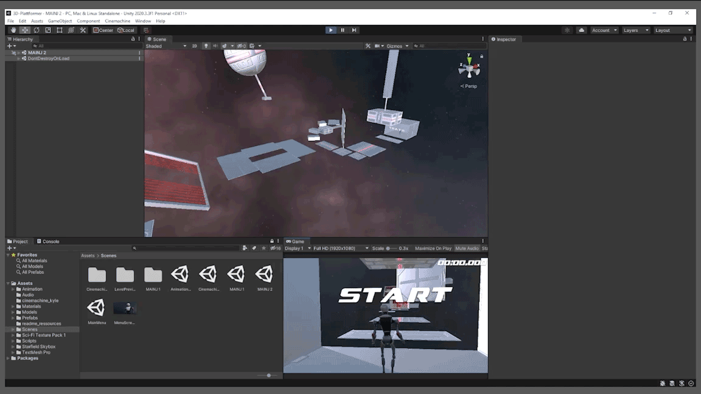
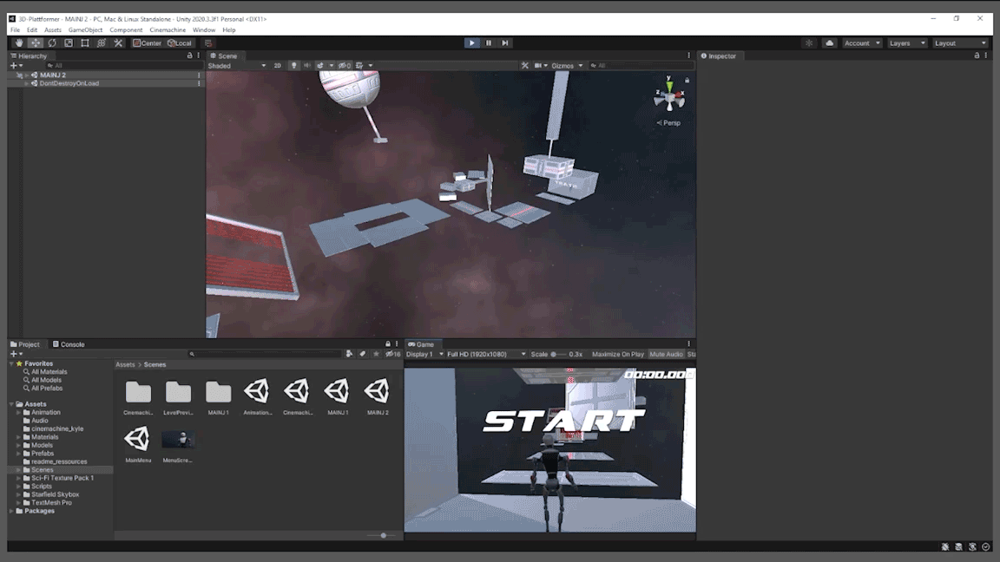

Space Robot in Space

Space Robot in Space is a simple 3d-platformer that takes place in space. You navigate as a robot with simple movement controls, like jumping, through a vast amount of obstacles to reach the other side of the level. Included to this game are ragdoll physics, making it hard for the player to proceed once colliding with one of the obstacles. We drew big inspiration, especially for using the ragdoll physics, from the game ALTF4 from PUMPKIM.
For this game, we wanted to give the player some kind of a challenge. That's why we decided to design two different levels with different difficulties. The first level serves as a introduction but also throws you right into the game. The second level is a rather more challenging one by reusing the obstacles and repositioning them in a way, that coordination and timing is necessary to get through it.
 

This game was created as a student group project at the universty HTW-Berlin. This was the second assignment of two for the study course "Game Engines". The assignment was to program a game using Unity and restricting ourselves only
with options related to 3D.
If you want to play this game too, click the link
here.